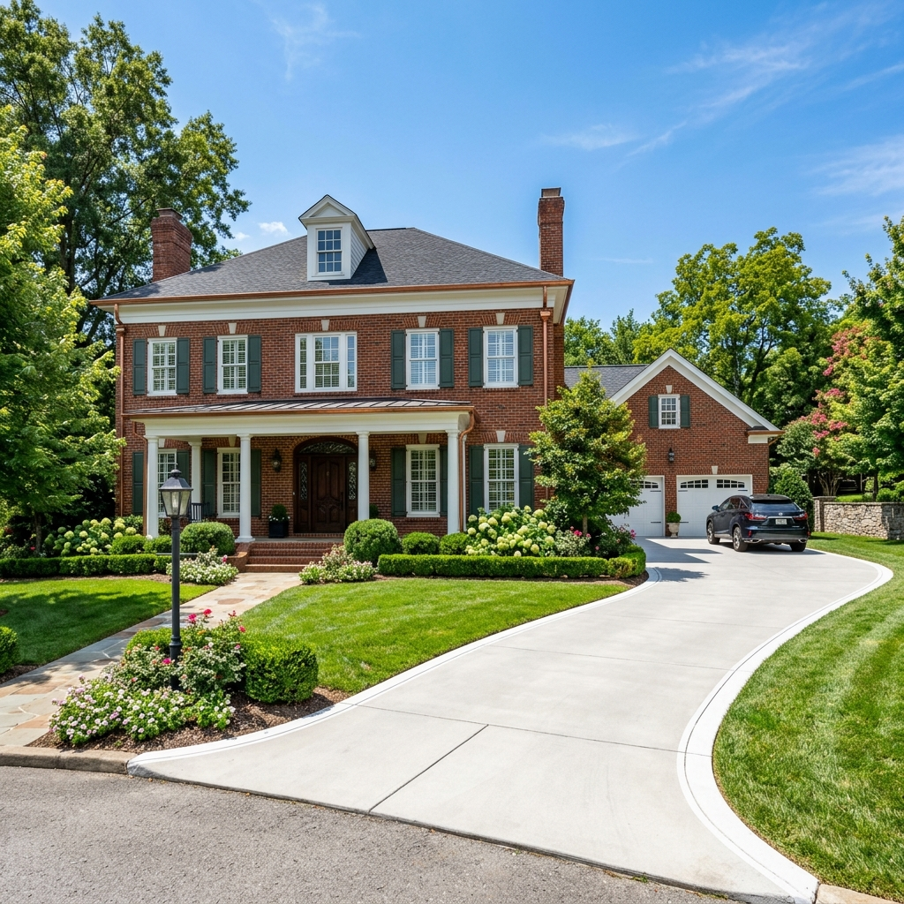
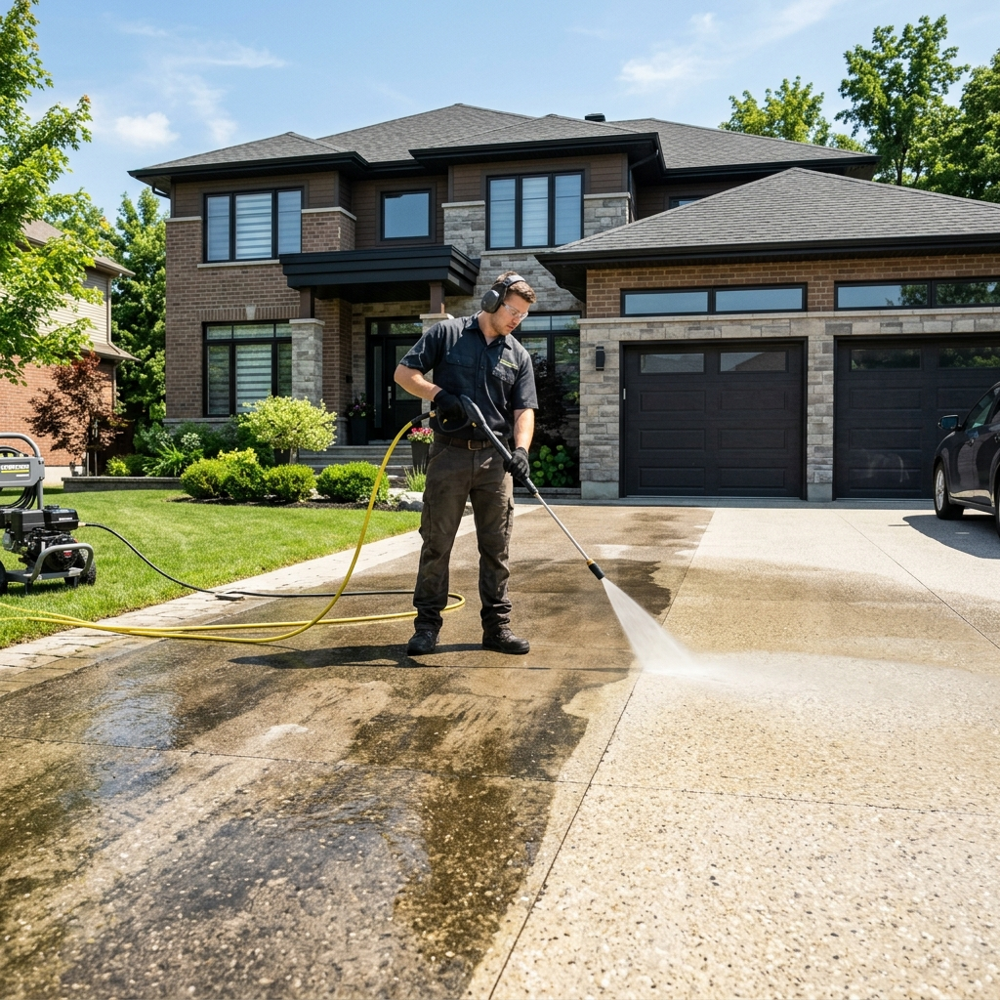
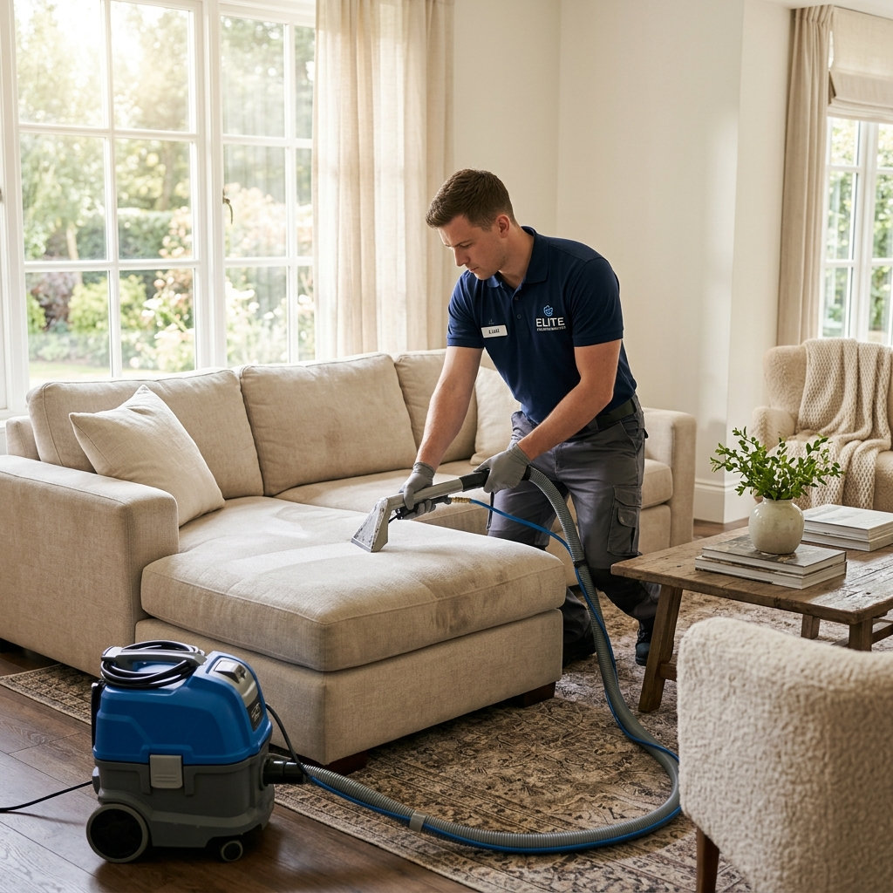
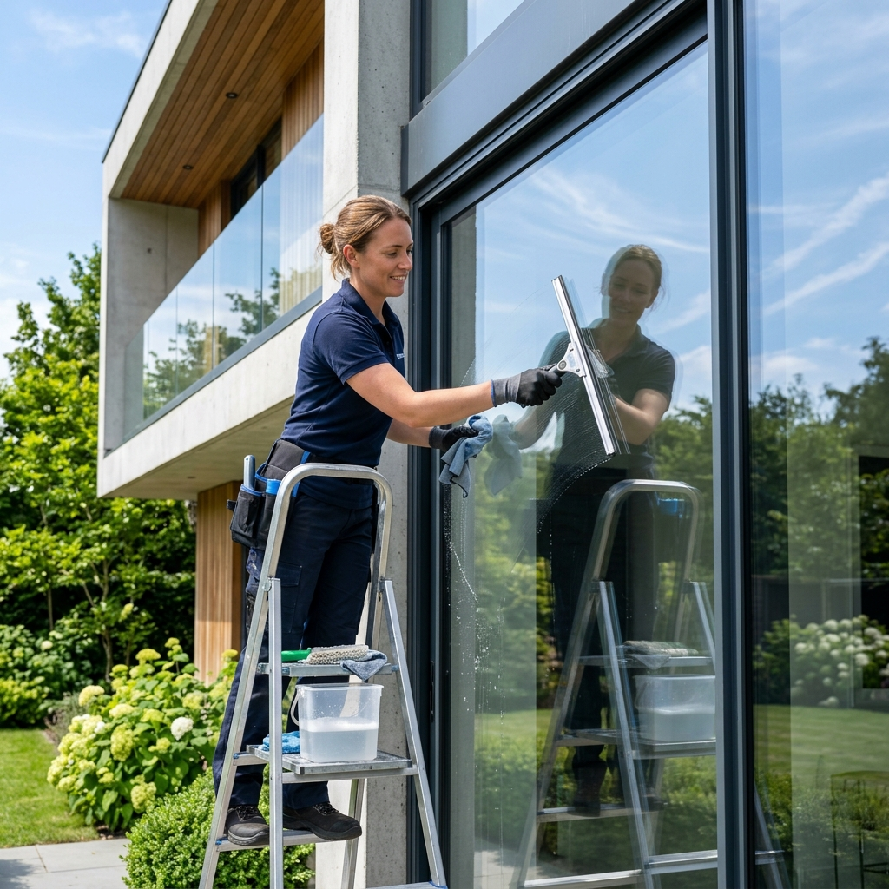
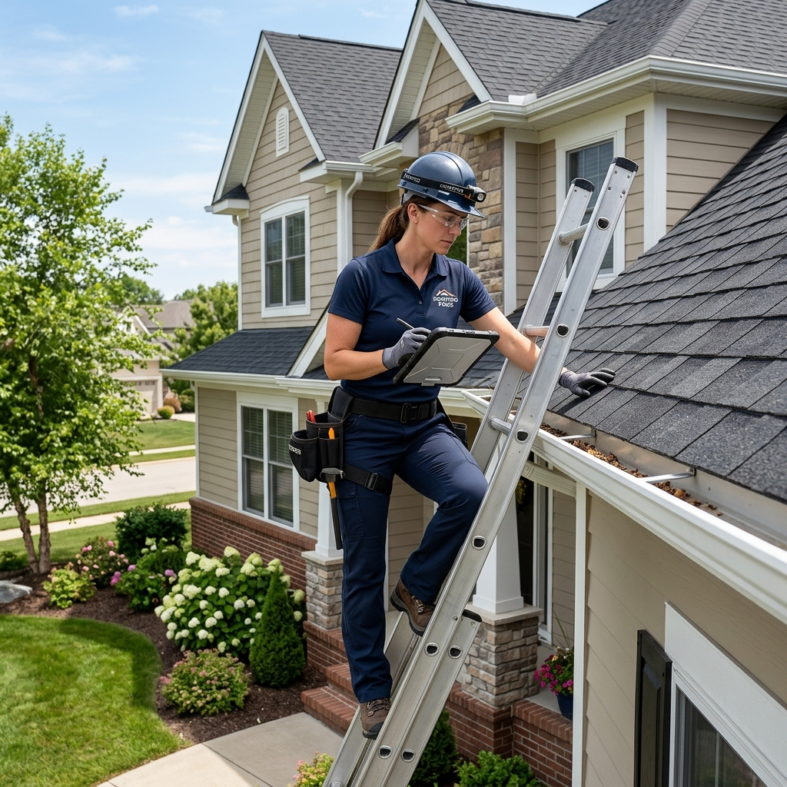
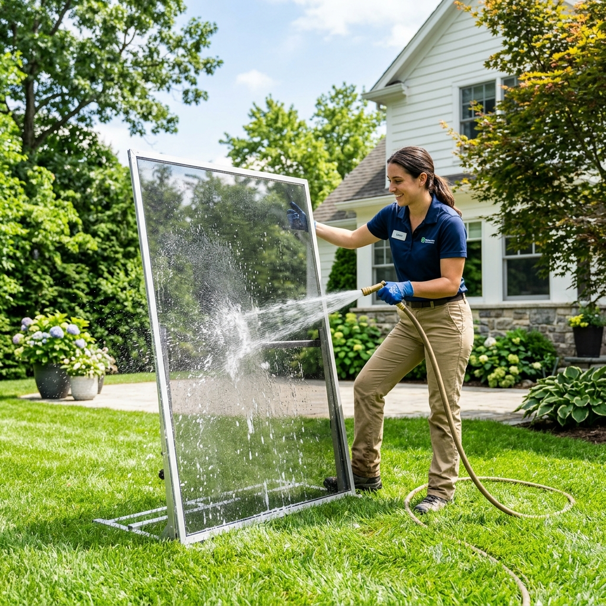

Franklin's Premier Exterior Cleaning.
Preserving the beauty of Williamson County. From historic downtown properties to luxurious new builds, we provide top-tier soft-washing, gutter cleaning, and upholstery sanitization across Franklin.
Defending Franklin Homes from Southern Humidity
Living in Franklin means experiencing the dense humidity of the South. This specific climate creates the perfect breeding ground for green algae and black mold to grow on your home's exterior siding, brick, and driveway. Not only does this destroy your property's historic charm, but if left untreated, organic growth can eat away at paint and rot wood fascia boards.
Damage Prevention
We specialize in combating Williamson County's harsh elements. Whether clearing heavy autumn leaves from mature oaks or deep-cleaning concrete driveways.
Safe Soft-Washing
Using our specialized low-pressure soft wash system to safely remove years of grime from delicate historic homes in downtown Franklin, ensuring your property stays immaculate.

Why Franklin Trusts Lollie's
Franklin's historic charm requires a cleaning company that truly understands delicate architecture. You wouldn't treat a 100-year-old historic home the same way you'd treat a newly poured concrete driveway. Our certified technicians use the exact right combination of pressure and environmentally-safe detergents.
- Eco-Friendly Solutions: Safe for your pets, lawn, and Tennessee waterways.
- Fully Licensed & Insured: Total peace of mind for residential and commercial properties.
- Damage-Free Guarantee: We utilize soft-washing for delicate surfaces to prevent etching.
Comprehensive Property Care
We offer a full suite of exterior and interior cleaning services designed specifically for the needs of Franklin homeowners and property managers.
Professional Gutter Cleaning
Heavy spring rains and autumn leaf drops can quickly overwhelm your drainage system. We safely remove sludge, leaves, and debris from your gutters and downspouts in Franklin, ensuring proper water flow. This critical maintenance prevents water from pooling around your foundation, which can lead to flooded basements and expensive structural repairs.
Get a Gutter Quote
Driveway & Patio Washing
Over time, concrete driveways and patios in Williamson County accumulate deep oil stains, tire marks, and slippery green algae. Using commercial-grade surface cleaners and high-pressure washing, we strip away years of embedded grime, instantly boosting your property's curb appeal and eliminating slip hazards for your family.
Get a Washing Quote
Couch & Upholstery Deep Cleaning
We don't just clean the outside. Our advanced deep-water extraction process for couches, sofas, and living room upholstery pulls out trapped pet dander, tough stains, and odor-causing bacteria. Enjoy a fresher, healthier indoor environment right in the comfort of your Franklin home.
Get an Upholstery Quote
Streak-Free Window Cleaning
Give your home a brighter feel. Our interior and exterior window cleaning leaves every single pane streak-free, spotless, and crystal clear. We use professional-grade squeegees and eco-safe solutions to remove hard water stains and dirt, allowing maximum natural Tennessee sunlight into your living spaces.
Get a Window Quote
Gutter Inspection & Maintenance
Not sure if your gutters need cleaning or repairs? We offer thorough inspections to check for sagging sections, separated seams, and clogs. Preventative maintenance is the key to extending the life of your roofing and fascia boards during Franklin's unpredictable weather seasons.
Schedule an Inspection
Professional Screen Cleaning
Window screens act as a filter, trapping pollen, dust, and dirt from entering your home. We carefully remove and wash your window screens using gentle but highly effective methods. This not only improves your air quality when you open your windows but also ensures your clear view isn't obstructed by grime.
Get a Screen QuoteProudly Serving All of Franklin & Williamson County
Whether you need emergency gutter clearing, driveway power washing, or delicate soft-washing for a historic estate, our local crews are ready to dispatch across Franklin.
Common Questions from Local Homeowners
We use a specialized soft-wash system that utilizes low pressure and eco-friendly detergents to melt away algae and mold without damaging aged mortar or delicate brick on historic Franklin properties.
Yes, we provide commercial-grade driveway and patio pressure washing across all of Williamson County, removing deep oil stains and tire marks safely.
Given the mature trees in Franklin's older neighborhoods, we recommend professional gutter cleaning at least twice a year—once in late spring and once after the autumn leaf drop.
Schedule A Free Home Evaluation
Ready to restore your gutters, clean your couch, or power-wash your driveway? Fill out the form, and our estimator will get back to you within 2 hours with a free, no-obligation quote.
Call/Text Us
Service Location
Nashville, TN & surrounding metro areas